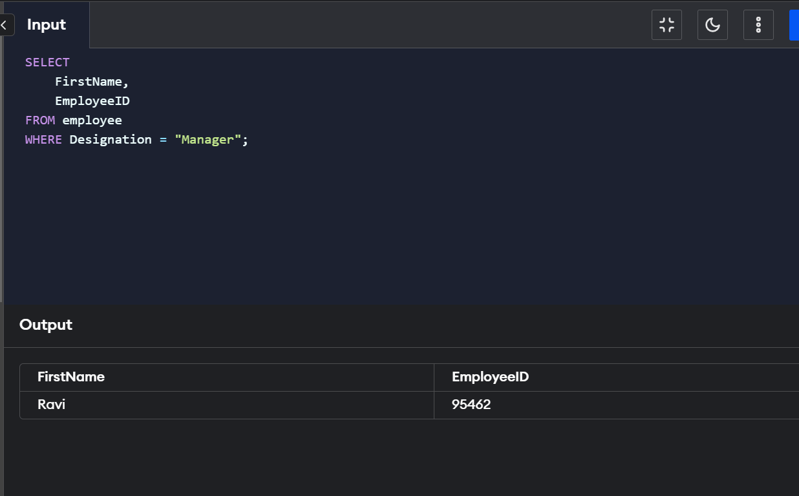
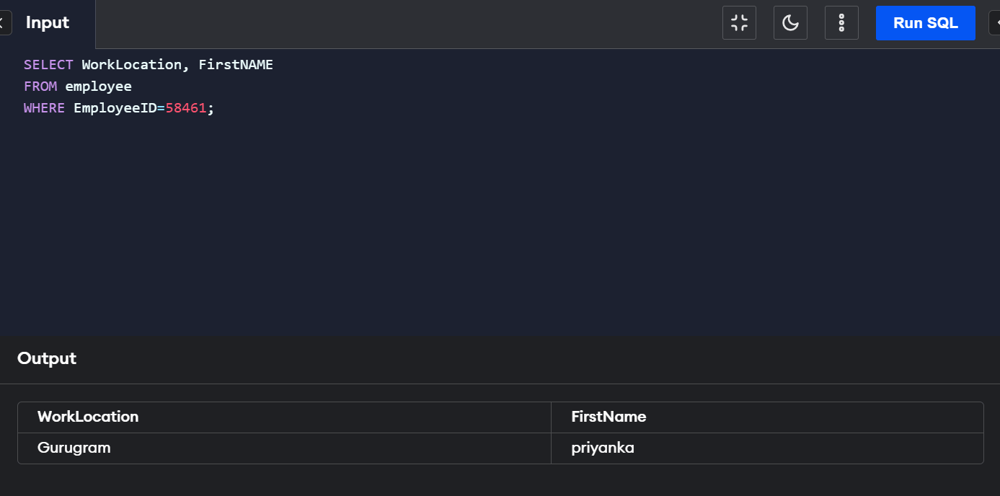

Where clause
Querying databases to retrieve information is challenging in itself. Using the WHERE clause makes specified
data aggregation a lot easier. Fetching these relational data items, the WHERE Clause in SQL is used. This is
responsible for selecting only those data items that correspond to the mentioned conditions.
This is done to specifically filter out particular columns.
Syntax of SQL WHERE Clause
SELECT column_name
FROM table_name
WHERE condition;
Operators in The WHERE Clause
Operators in WHERE clause helps you to specify the various conditions that you would like to query from a database.
1. = :- Equals
2. > :- Greater than
3. < :- Less than
4. >= :- Greater than or equal
5. <= :- Less than or equal
6. <> or != :- Not equal
7. BETWEEN :- Between a certain specified range
8. LIKE :- Searching for a pattern
9. IN :- To specify multiple possible values for a column
The WHERE Clause is used to fetch records from tables that adhere to certain conditions.
A number of operators can be used to specify the conditionals.
Operators include equals, less than, greater than, greater than equal to, less than equal to, not equal to, BETWEEN, IN and LIKE.
WHERE can act as a conditional filter, or to find matching patterns.

